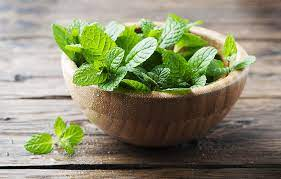

10 Health Benefits of Mint Leaves That You Should Know!

Mint leaves also known as Pudina are a popular aromatic herb for its freshness with several health benefits.
Since ancient times, people have used different types of mints all over the world.
A variety of mint plants offer you a lot of anti-oxidant properties and health benefits.
Nutritional Profile
Mint leaves are packed with antioxidants and phytonutrients, and contains vitamin A, vitamin C, and
B-complex,
phosphorous, calcium, and has anti-bacterial properties
It is one of the rich sources of iron, potassium, and manganese which improves haemoglobin levels and
promotes
brain function
Mint leaves are low in calories and contain a minimal amount of protein and fat so you can add mint leaves
in
your weight loss diet program easily
Health Benefits of Mint Leaves Are:
Science has proven that mint has plenty of health benefits for your body.
Here are some of the best ways that you can use mint to help your body stay healthy.
Treat Indigestion
Relieve Irritable Bowel Syndrome
Improve Respiratory Complaints
Oral Care
Improve Brain Power
Boosts Immunity
Help in Breastfeeding Pain
Skincare
Healthy Hairs
Helps Ease Allergies
GROWING
Minimal care is needed for mint. For outdoor plants, use a light mulch. This will help keep the soil moist and
keep the leaves clean.
For indoor plants, be sure to water them regularly to keep the soil evenly moist.
At first, mints develop into well-behaved–looking, bushy, upright clumps, but they soon set out to conquer new
territory with horizontal runners and underground rhizomes. Unless you block the advance, a pert peppermint
plant can turn into a sprawling 4-foot giant in just 1 year. It’s not the stuff of horror movies, however. Mints
benefit from picking and pruning. They are shallow-rooted and easy to pull out, so there’s no reason to worry,
as long as you provide physical barriers such as walls, walkways, or containers.
Summary
According to science, mint is an amazing herb with a lot of benefits. You can’t go wrong by adding mint in your
diet as it is full of antioxidants, vitamins, iron, and so on. In simple words, include mint in your diet if you
want to stay healthy and happy.